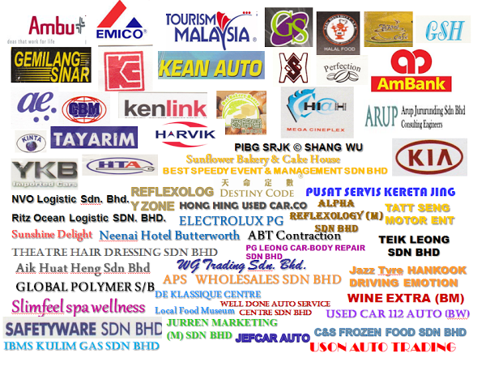

IW CAFFE MACHINE SDN.BHD.
Incorporate to Sdn Bhd in year 2011, founded by a professional water system group on water filtration and also spring water reproduction technology back in year 2004.
Dealing with all major variety of water filtration system and also beverage dispense machine.
Our product sells well in the domestic and commercial market, ensures our customers a healthy, safe and easy prepare beverage in an economical, ecological, and time-saving manner, through its wide range of products.
Close

Close
To be a leading distributor of superior quality point of use water dispensers, beverage dispense machine and to lead our chosen markets by providing drinking water and beverage expertise, innovation, excellent service and customer support.